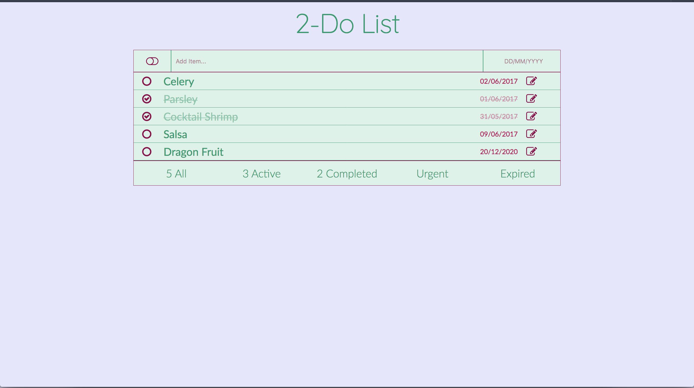
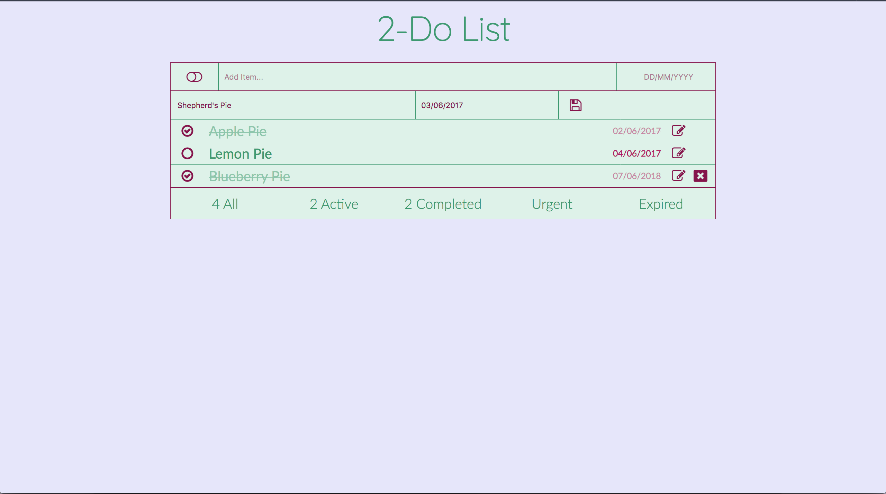
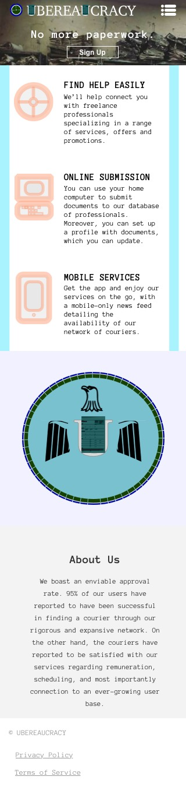

👑  👑
👑

Ismail Arafa is a junior web developer 💻, accomplished musician 🎼, and huge cheese 🧀 fiend.
Based in Toronto, Canada
🍁
🐪 Story 🇨🇦
Originally a desert dweller, l0rdcafé stumbled upon the art of coding one day and, eager to learn more, he traversed the Atlantic Ocean 🌊 through a combination of camel back riding, telekinesis and sheer willpower.
After an arduous and tasking journey, he finally made his way to Canadian shores where he would pursue his passions for melting cheese and crafting a myriad of web creations.
💾 Projects 💾
2-Do List
I am very excited to share with you my first web application! As underwhelming as a 2-Do List might feel, I try to always remember that almost 90% of all web applications has some sort of 2-Do List at its base.
As you can see in the picture above, this is how the 2-Do List looks when filled out with some of the states of the items altered.
Additionally, you can edit an entry and also its date simply by clicking on the edit button, and then saving the change(s) by clicking the save button.
If you haven't checked it out yet, here's the link for the 2-Do List, and for those Vanilla JavaScript hackers, here's a link to the master repo.
June 1, 2017Welcome to my first project! This was built in Sketch shortly after learning the basic skills of design. The project was a website for a fictional app that eradicates your bureaucratic nightmares. There are four different device-sizes where the design was adjusted to fit within said devices, for the full PDF click here.

The picture above outlines how the 600px screen width main section would look like. With the 3-column grid present in both the 1200px and 768px sizes being switched to rows.
The main logo for the app is as shown above, I simply masked an image of an eagle in three different rounded rectangle masks for the wings and the head respectively, and used the U from the company name in the middle of the logo.
This last picture shows the 320px device width design. The main section is similar to the 600px artboard, however, the content is centered and more vertical.
For more, check out GitHub.
May 8, 2017